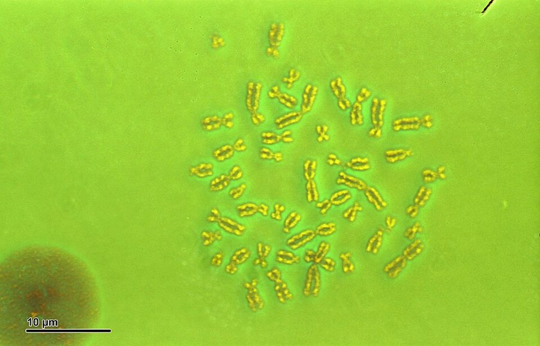
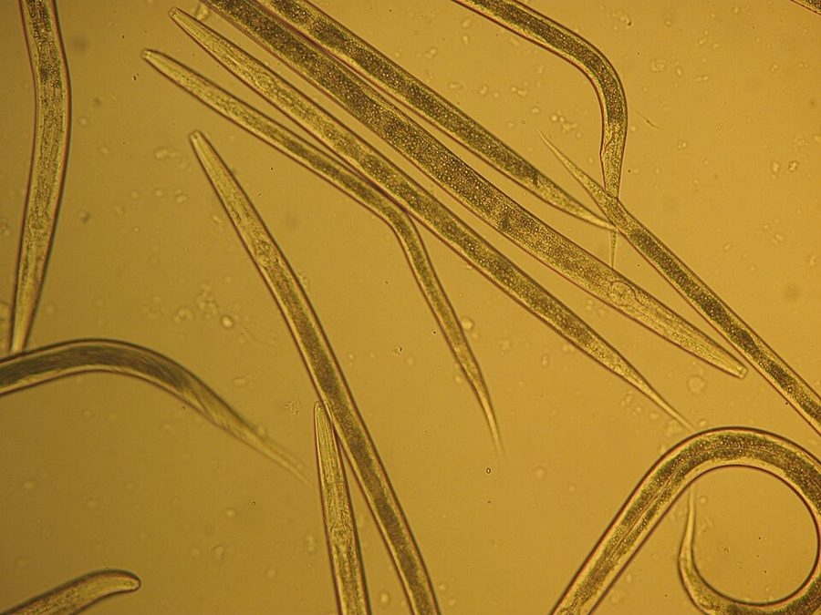

这一页在做什么
第 3 章的前半。第 2 章说复制因子造出了生存机器，这一章把复制因子落到今天的 DNA 上：它怎样复制自己、怎样间接地造出身体，减数分裂和交换又怎样把染色体一代代剪开重拼。为的是回答一个看似技术性的问题：书名里的「基因」到底指多长的一段 DNA？读的时候抓两条线：作者的比喻怎样一层层换掉（设计图、活页夹、收报纸带），以及「长寿」怎样变成了基因的定义。

显微镜下一个男性细胞里的染色体，细胞分裂时铺开拍的，一共 46 条。书里把它们比作整栋楼设计图的 46 卷，第 14 段又补充：其实是 23 对，每对一条来自父亲、一条来自母亲。Josef Reischig，CC BY-SA 3.0，维基共享资源 读之前：这一页在全书的哪里
第 2 章停在「复制因子造出了生存机器，我们就是它们的生存机器」。这一章第 3 段先回头修正：前面为了简单，把 DNA 说得像原始汤里的第一个复制因子，其实未必。接下来的一切，都是在为第 1 章立下的主张备料：基因是选择的基本单位。要说这句话，得先说清基因是什么、有多长。作者自己在第 38 段（下一页开头）才说「我们回到了第 1 章结尾的地方」。
染色体上的基因首尾都说不清。书名里的「基因」到底指 DNA 上多长的一段？作者为什么要自己给它下定义？
读的时候带着这几个问题。不用先找答案，读完回来对照「检查一下理解」。
作者承认基因合作造身体，几乎分不清谁贡献了什么。他为什么还坚持一个一个地说基因？§2
交换为什么对全书的论证「非常重要」？一整条染色体能完整地活几代？§3
按作者的定义，什么样的一段染色体够格叫「基因」？有没有一条明确的长度界线？§4
拟态蝴蝶的例子里，「一个基因」和一个顺反子是一回事吗？§5
这一页的路线
这一页是在打地基，读起来像生物课，容易觉得离「自私」很远。走法是这样：§1 从千奇百怪的生存机器收拢到同一种分子 DNA，立起一个比喻（每间房里都放着整栋楼的设计图），讲 DNA 做的两件事。§2 先承认基因扎堆合作，再说有性生殖把组合打散，同时给比喻添细节：成对的卷、能换的活页。§3 讲减数分裂和交换，比喻在这里第一次不灵，书页换成收报纸带。§4 是全页的拐点：作者不再讲事实，转去下定义，再用「你的 8a 染色体」这种第二人称的小故事算寿命。§5 补两种罕见的抄错，绕到拟态蝴蝶，用一个书名的玩笑收住。读到 §4 开头会觉得突然，那是因为前三节都在给这个定义备料。
说法
生物学
DNA §1
设计图 §1
基因扎堆 §2
活页夹 §2
交换 §3
收报纸带 §3
下定义 §4
片段寿命 §4
拟态蝴蝶 §5
书名 §5
本站示意图。蓝点是作者的比喻、定义和玩笑，橙点是 DNA 和细胞里真实发生的事；折线是阅读顺序。§4 开头连着两个蓝点：从讲事实转到下定义。 作者落在哪： 本书说的基因，不是分子生物学里的一个顺反子，而是任何一段能以拷贝的形式延续足够多代、够格当自然选择单位的染色体。交换让长的很快被拆散，所以越短越长寿；这个定义没有硬边界。
分节地图
这一页是原书第 3 章的第 1–5 节。原书各章没有小标题，粗体的节名是本站起的，下面是这一节第一段开头的几个词，在电子书里搜它就能跳过去。读完打个勾。
每个房间里的蓝图约 1500 词 We are survival machines, but … 第 3 段先修正前两章的简化：DNA 未必是第一个复制因子。第 5–6 段立起设计图比喻；第 9 段「获得性不遗传」是下一页注 10 的伏笔。 成对的卷和等位基因约 1100 词 The first thing to grasp about a … 第 12 段基因扎堆合作（星号，注 8）；第 13 段是全章的中心论点。第 15 段的「3b」是原书印错，应为 3a。 减数分裂与交换约 800 词 I have described the normal division of … 第 22 段说交换对全书的论证非常重要；第 23 段书页比喻失效，换成收报纸带，顺带讲顺反子。 基因的定义：越短越长寿约 1100 词 In the title of this book the … 第 24 段是定义（星号，注 9），全页的钥匙。第 26 段的百分比来自作者的简化假设；第 27–30 段用「你的 8a 染色体」算寿命。 倒位与拟态蝴蝶约 1000 词 The chance coming together, through crossing-over … 点突变、倒位，再到拟态蝴蝶（第 33–35 段）。第 36 段说定义是渐变的；第 37 段是书名的玩笑。
先用中文过一遍：这一页的概念
先把这一页用到、作者默认你懂的几个概念讲一遍。讲的是概念本身，作者拿它推出什么，读原书时自己看。前几章讲过的复制因子 、生存机器 、长寿、生殖力、复制精确性 、选择单位 ，点进去看。
§2 等位基因（显性、隐性） allele; dominant / recessive 染色体上的同一个位置（座位，locus），在一个种群里可以有好几个不同的版本，这些版本互为等位基因。人的染色体成对，所以每个位置有两份，可能是同一个版本，也可能不同。两份不同时，有时一份的效果盖过另一份，这一份叫显性，被盖住的叫隐性；隐性的那份照样复制、照样可以传给孩子，只是在这个人身上没露出来。更多时候两份各起一部分作用。容易混的一点：显性不等于更好，也不等于更常见，它只说两份不同时谁的效果露出来。类比：一个配置项在全公司有六种写法，每台机器上最多装两份。
在这一页： 第 16–18 段拿眼睛颜色举例。第 18 段作者说，就本书而言等位基因就是「对手」：争同一个位置的版本。
§2 基因库 gene pool 一个种群里所有个体身上的所有基因拷贝，合起来看作一个总体。它不是真有一个池子：任何时候基因都待在一个个身体里。它是一个统计上的抽象：有性生殖每一代都把基因重新洗牌、分进新的身体，长期看就像全种群共用一大池基因，每个新个体从里面抽一手牌。演化在这个尺度上可以说成：池子里各个等位基因所占的比例（基因频率）在变。这个说法 1920 年代由苏联遗传学家 Serebrovsky 提出，Dobzhansky 把它带进了英语。
在这一页： 第 19 段引入，作者说它是遗传学家的专门术语、一个值得用的抽象。全书后面讲选择，几乎都在说基因库里谁的比例在涨。
§3 减数分裂（对照：有丝分裂） meiosis / mitosis 细胞分裂有两种。身体长大、伤口愈合靠有丝分裂：一个细胞把全部染色体复制一份，分成两个一样的细胞。减数分裂只在造精子、卵子时发生：成对的染色体被拆开，每个精子或卵子只拿每对里的一条，人的 46 条变成 23 条，受精时两个 23 条合成新的 46 条。每一对里拿哪一条是随机的，23 对各自独立，光这一步就能组合出 2 的 23 次方（约 840 万）种。再加上下面讲的交换，组合几乎无穷，所以同一对父母的孩子各不相同。
在这一页： 第 20–21 段。作者用它说明：精子不能随便拿 23 条，也不会把祖父或祖母的染色体整条原样传下去。
§3 交换 crossing over 减数分裂时，成对的两条染色体（一条源自父亲，一条源自母亲）贴在一起，在对应的位置剪断、互换片段，然后才分开。显微镜下两条染色体交叉成 X 形的地方叫交叉（chiasma）。结果是：精子或卵子里的每条染色体，都是两条拼起来的。人的每对染色体每次减数分裂通常至少交换一次；位置大致随机，但并不均匀，有些地方特别容易断（重组热点）。今天中文教科书多叫「交叉互换」或「重组」。程序员可以想成两个分支在同一行剪开，互换后半段，得到两个新版本。
8a：你从父亲那里得来
8b：你从母亲那里得来
剪断处
交换
一个精子拿到的 8 号
另一个精子拿到的 8 号
短片段：多半碰不上剪断处，原样传下去
长片段：跨过剪断处，这一代就被拆散
本站示意图。为了看得清，只画了一处剪断；真实的染色体可能断好几处。左边两条在你身上，右边两条进了你的两个精子（或卵子），每条都是你父亲和母亲两边的拼贴，对将来的孩子来说就是祖父和祖母两边。 在这一页： 第 22 段，作者说它对本书的整个论证非常重要：交换让整条染色体活不过一代。第 23 段书页比喻在这里失效。
§4 基因（本书的定义）和顺反子 gene (in G. C. Williams’s sense); cistron 「基因」至少有两种用法。分子生物学的基因，大致是编码一条蛋白质链的一段 DNA；1957 年 Seymour Benzer 用一种互补实验界定这样的功能单位，起名顺反子（cistron）。演化生物学里还有另一种用法：G. C. Williams 1966 年在《适应与自然选择》里说，基因就是以可观的频率分离和重组的东西。要紧的不是它在分子上从哪起、到哪止，而是它能不能作为一个整体一代代原样传下去，在选择里被筛。这种「演化的基因」没有固定长度，可以比一个顺反子短，也可以包好几个。两种用法各管各的问题，读这本书时要分清作者用的是哪一种。
仍然完整的机会
100%
50%
0
0
10
20
30
40
传过的代数 →
占染色体 1% 的一段
占 10%
占一半
本站按书里第 26 段的简化假设算的：每次减数分裂整条染色体恰好交换一次、位置随机，占整条比例为 L 的一段，每代被切开的机会就是 L，完整传过 n 代的机会是 (1−L) 的 n 次方，平均能撑约 1/L 代。真实的交换次数和位置都更复杂，这里只看趋势：越短越长寿。 在这一页： 第 24 段给出定义，第 25–30 段论证越短越长寿，第 36 段说它像「大」「老」一样是渐变的定义。
书里的人和研究
按在书里出现的顺序排，标题前是节号。只讲到读懂这一页需要的程度。
§1 啤酒垫里的小虫
显微镜下的 Panagrellus redivivus。Stug.stug，CC BY-SA 3.0，维基共享资源 第 2 段说，有一种小虫在德国的啤酒垫里保存基因。作者没写学名，通常认为指的是 Panagrellus redivivus，英文俗名就叫「啤酒垫线虫」（beer mat nematode）：一种很小的线虫，吃发酵物里的酵母，常年潮湿的毡质啤酒杯垫正合它的胃口。荷兰线虫学家 de Man 在 1913–1914 年描述过啤酒垫里的线虫，后来被认为和「酸浆线虫」是同一种。养鱼的人今天还拿它喂刚孵出的小鱼。作者拿它说明：生存机器千奇百怪，里面的复制因子却是同一种分子。
§1 Cairns-Smith 和黏土第 3 段作者先认账：前两章为了简单，把 DNA 说得像原始汤里的第一个复制因子，其实最早的复制因子可能是别的分子，后来被 DNA「夺了权」。Cairns-Smith 从 1960 年代起提出，最早的复制因子也许根本不是有机分子，而是黏土里能把自身结构一层层复制下去的矿物微晶，有机分子后来才接管（他 1982 年的书就叫《遗传接管》）。作者只说这个想法「引人入胜」，没说他信。这个假说至今没有直接证据，也没成为主流。第 3 段末尾说新一轮夺权也许正在开始，指的是第 11 章的觅母。
Alexander Graham Cairns-Smith 1931–2016 苏格兰化学家，长期在格拉斯哥大学做有机化学和分子生物学，以「生命起源于黏土晶体」的假说出名。
§2 Gould 和「基因原子论」（注 8）注 8 挂在第 12 段那句「几乎不可能把一个基因的贡献和另一个的分开」后面。Gould 在 1980 年的文集《熊猫的拇指》里有一篇专门批评这本书，说身体不能拆成一个个由单个基因造的零件，没有「左膝盖骨的基因」。作者 1989 年的回答是：这话我 1976 年就说过了。他整段引了自己第 12 段和下一页第 49 段的原文，又说 Gould 几乎像是事先就认定他是个天真的原子论者，才漏看了这些段落。两人真正分歧在哪，见「本站怎么看」。
Stephen Jay Gould 1941–2002 美国古生物学家、科普作家，长期在哈佛大学，和 Niles Eldredge 提出「间断平衡」。几十年在《自然史》杂志写专栏，是这本书最有名的批评者之一。
§4 G. C. Williams 和「基因是选择单位」（注 9）第 24 段的定义来自 Williams，注 9 抄了他书里的原话。作者在注里说，Williams 和他都没觉得自己在提什么新东西，以为只是重申 1930 年代新达尔文主义三位奠基人 Fisher、Haldane、Wright 的原理；可也许因为两人措辞强硬，有些人不接受「基因是选择单位」，作者说看来 Wright 本人也在其中，理由是自然选择看到的是生物体，不是体内的基因。这场「选择单位」之争，下一页还会接着讲。
George C. Williams 1926–2010 美国演化生物学家，长期在纽约州立大学石溪分校。1966 年的《适应与自然选择》批评「为了群体」的解释，影响了一代人；1957 年还写过一篇衰老理论的论文（下一页讲）。
Sewall Wright 1889–1988 美国遗传学家，群体遗传学的奠基人之一，提出遗传漂变和适应度地形图的想法。
§5 拟态蝴蝶：一个种，两种打扮
Papilio dardanus 的雌蝶，cenea 型，摄于莫桑比克。这一型模仿的是当地难吃的 Amauris 斑蝶（如 Amauris echeria）。Charles J. Sharp，CC BY-SA 4.0，维基共享资源
同一种、同一个地方的另一只雌蝶，hippocoon 型，黑白分明，模仿的是另一种难吃的斑蝶 Amauris niavius。Charles J. Sharp，CC BY-SA 4.0，维基共享资源
第 33–35 段讲的是贝氏拟态（Batesian mimicry）：本身好吃的蝴蝶长得像难吃的，骗过学乖了的鸟。作者没点名「一个种里有两种拟态」的是哪种蝴蝶。教科书常举的是非洲的 Papilio dardanus：雄蝶不拟态，雌蝶却有好几种截然不同的型，各像一种难吃的斑蝶，所以作者举的「它的兄弟模仿 B」放在这一种身上不成立。早年的杂交实验就发现，雌蝶长成哪一型，由一个座位上的几个等位基因决定。这个座位到底是一簇基因还是一个基因，见「对照今天」。
词与短语
按节排，每节前面是分节地图里的节名。标着「每个字都认识」的，是熟词生义、习语和反话，最容易读错。灰色的那几个字是原句里的位置，在电子书里搜它就能找到。
§1 每个房间里的蓝图
a million million million
… insects may be a million million million.
一百万的三次方，即 10¹⁸
英式说法，把 million 连乘：昆虫个体可能有百亿亿只。第 5 段的 a thousand million million cells 是 10¹⁵，即一千万亿个细胞。
works in mysterious ways
… DNA works in mysterious ways.
行事神秘莫测
仿英语老话 God moves in a mysterious way（上帝行事神秘莫测，出自 18 世纪 William Cowper 的赞美诗）。作者把上帝换成 DNA，是个玩笑：猴子、鱼、啤酒垫里的线虫花样百出，背后是同一种分子。
For simplicity
… For simplicity I have given the impression …
为了简单起见
作者认账：前两章把今天的 DNA 说得和原始汤里的第一个复制因子差不多，是简化。这本书的章首常有这类自我修正，值得留意。
intriguing suggestion
… has made the intriguing suggestion that …
引人入胜的设想
intriguing 是「有意思、勾起好奇」，不是「我赞同」。作者只说 Cairns-Smith 的黏土假说值得一想，没表态对不对。
Usurper or not
… Usurper or not, DNA is in …
不管是不是篡位者
接着上文的政变比喻：DNA 也许是后来夺权（seized）的篡位者。in undisputed charge 是「无可争议地掌着权」。句末 a new seizure of power 指第 11 章的觅母，作者用的是 tentatively（试探着提出）。
immortal coil
… chains twisted together in an elegant spiral; …
不朽的螺旋圈（双关）
这几个词后面依次是带引号的 double helix 和 immortal coil。双关《哈姆雷特》的名句 shuffled off this mortal coil（摆脱这尘世的纷扰，常被理解成抛下肉身）。coil 在莎士比亚那里是「纷扰」，在这里成了「一圈圈的螺旋」；mortal 改成 immortal：会死的是身体，不朽的是 DNA。章名 Immortal coils 就是这个双关。
in every particular
… is identical in every particular to …
在每个细节上（都相同）
particular 作名词是「细节、项目」。人的 G 和蜗牛的 G 是一模一样的分子，不同的只是排列顺序。
run to
… architect’s plans run to 46 volumes …
（篇幅）共有
run to 说篇幅、数量「达到」，常用于书：The report runs to 300 pages。不是「跑到」。
take us quite a long way
… will take us quite a long way.
能管用很长一段
take someone a long way 是「能让人走很远」：这个比喻能用很久。下一句 When it finally breaks down（等它终于不灵了），到第 23 段兑现。
It is one thing to
… It is one thing to speak of …
说……是一回事（做……是另一回事）
常见句式 It is one thing to A, but quite another to B。这里后半句没写出来，换成了问句：设计图怎么变成身体？
a far cry from
… may seem a far cry from making …
和……相去甚远
字面「远远的一声喊」。造蛋白质看上去离造身体还远，作者说这是第一小步。
not one jot
… not one jot will be passed on …
一丁点儿也不
jot 是极小的一点（来自希腊字母 iota）。这句讲获得性不遗传：你一生学到的知识和智慧，一点也不会经遗传传给孩子。
starts from scratch
… Each new generation starts from scratch.
从零开始
from scratch 原指赛跑从起跑线（scratch）出发。每一代的身体都照基因重新造，不继承上一代身体的改变。
preserving the genes unaltered
… of preserving the genes unaltered.
让基因原样保存下去（的办法）
整句让人想起 19 世纪作家 Samuel Butler 的名言：母鸡只是一个蛋造出另一个蛋的办法。主次倒过来：不是基因为身体服务，是身体替基因服务。
Genes just are
… Genes just are, some genes more …
基因只是「在」
are 原书是斜体：基因只是存在着，没有目的；some genes more so than others，有的基因更「在」，也就是存留得更久、拷贝更多。紧接在「基因没有远见，不做计划」后面。
that is all there is to it
… that is all there is to it.
仅此而已
习语，「事情就这么简单，没别的」。作者在强调：基因的「成功」背后没有意图，只有谁留下来了。
Not by a long way
… they were. Not by a long way.
差得远呢
接在否定句后加强语气：决定基因长寿、多产的因素，远远不像原始汤时代那么简单了。
In recent years
… In recent years—the last six hundred …
近年来（过去六亿年左右）
冷笑话：在演化的尺度上，六亿年也只算「近年」。肌肉、心脏、眼睛都是这段时间的发明。
§2 成对的卷和等位基因
highly gregarious
… it is highly gregarious.
非常合群、爱扎堆
gregarious 本指动物群居、人爱交际。作者拟人地说基因合群：一台生存机器里装的是成千上万个基因，它们总是成群地一起干活。
cooperative venture
… a cooperative venture of such intricacy …
合伙的事业
venture 是「合伙做的生意、有风险的事业」，这里就是一项合作工程：造身体复杂到几乎分不清哪个基因贡献了什么。注 8 就挂在这句后面。
labour it
… if I seem to labour it!
（把论点）讲得太啰嗦
labour a point 是把一个论点翻来覆去地讲。作者预先道歉，因为他知道有些他很尊敬的同事「固执地拒绝同意」：这不是公认的教科书结论。
the facts of sex
… briefly explain the facts of sex.
性的基本知识（玩笑）
仿 the facts of life：大人给孩子讲「孩子是怎么来的」的委婉说法。作者换成 facts of sex，接下来讲的其实是染色体怎样配对、怎样交换。
page for page
… can be regarded, page for page, as …
一页对一页地
来自父亲的每一卷和来自母亲的对应一卷逐页对应：同样是第 6 页，讲的是同一件事（比如眼色），写法可以不同。
one reading prevails over the other
… Sometimes one reading prevails over the other.
一种写法占上风
reading 在这里是文本学的「异文、版本」：两页写法不同时，身体照哪一页造。prevail over 是「胜过」。接下来就叫它显性和隐性。
For our purposes
… For our purposes, the word allele is …
就本书的用途而言
作者交代这是他的简化：遗传学里 allele 只是「同一位置的另一个版本」，他要读者把它读成「对手」。全书「基因彼此竞争」的说法从这里起步。
loose-leaf binders
… as being loose-leaf binders, whose pages …
活页夹
比喻升级：设计图的每一卷是活页夹，页可以抽出来换。为第 21 段的交换做准备：真的有「换页」这回事。
the population at large
… in the population at large which …
整个种群
at large 在这里是「整体上、总体」，如 the public at large（广大公众）。它还有一个常见意思「在逃」（the killer is still at large），这里不是。
doled out
… Our genes are doled out to us …
（被）分发给
dole out 是一份一份地发放，常带「配给、施舍」的味道。基因在受孕那一刻就发好了，我们没法挑。
presently
… as we shall presently see.
马上（就会看到）
presently 在英式英语里常是「不久、待会儿」，美式更常是「目前」。这里指几段之后就讲交换。
§3 减数分裂与交换
any old
… should not get just any old …
随便哪（23 条）
any old 是口语「随便什么、哪个都行」。精子不能随便抓 23 条，必须每对恰好一条。
gross
… this kind of gross, whole-chromosome distribution …
整块整块的（分配）
gross 在这里是「粗放的、整体的」，不是「恶心」。指整条整条的染色体原封不动地分下去，作者说实际上不是这样，因为有交换。
a patchwork, a mosaic
… would be a patchwork, a mosaic …
拼布、马赛克
patchwork 是碎布拼成的被面，mosaic 是碎片拼成的镶嵌画。精子里的每条染色体都是祖父和祖母两边的片段拼起来的。
starts to break down
… starts to break down here.
（比喻）开始不灵了
break down 本是机器「出故障」，用于比喻、论证时是「站不住、失效」。活页只能整页换，交换却可以从一页中间剪开。
To be sure
… To be sure, there are special symbols …
固然、诚然
To be sure 是让步，「固然……但……」，不是「为了确定」。作者先承认 DNA 上确实有「开始」「结束」两个标点，再说交换不管这些标点。
ticker tape
… on 46 rolls of ticker tape.
收报机纸带
旧时电报收报机（ticker）吐出的细长纸带，上面打着一串字符。作者用它取代书页：DNA 是一长串字母，没有天然的页边，交换可以在任何地方剪。可以想成一个很长的字符串。
§4 基因的定义：越短越长寿
to everyone’s taste
… will not be to everyone’s taste, …
（不会）人人都喜欢
作者先打预防针：这个定义有争议。下一句更直接：基因根本没有公认的定义。
nothing sacred about definitions
… there is nothing sacred about definitions.
定义没什么神圣的
作者的立场：定义是为自己的用途约定的，只要清楚、不含糊就行。读懂本章的钥匙：他不是在发现基因是什么，而是在宣布本书用「基因」指什么。
will take some justifying
… The definition will take some justifying.
需要好好论证一番
take some doing 一类说法是「得费点工夫」。作者承认这个定义不是不言自明的，下面几段都在为它辩护。
longevity-in-the-form-of-copies
… is another way of saying longevity-in-the-form-of-copies …
以拷贝形式的长寿
作者自造的连字符词：不是同一个分子活得久，而是它的拷贝一代代传下去。后文说的 longevity（长寿）都是这个意思。
a vast armada of tiny vessels
… a vast armada of tiny vessels, …
一支由小船组成的庞大舰队
armada 是西班牙语的「舰队」，在英语里常特指 1588 年的西班牙无敌舰队，泛指大舰队。几百万个精子是一支船队，只有一艘「找到了港湾」（found harbour）。航海比喻第 36 段还会用：同船的老水手。
set about
… set about replicating itself along with …
开始着手（复制自己）
set about doing 是「着手做」，不是「设置」。
barring
… but, barring a rather improbable coincidence, …
除非出现
barring 是介词「除非、除了」，和 bar（拦住）同源。新拼出的 8 号染色体，除非极巧，一定是独一无二的。
the rather special sense
… repeat the rather special sense in which …
相当特殊的意思
作者特意说明打了引号的 create（创造）：小片段早就存在，「创造」只是指这种排列以前没有过。他常这样给日常词加限定，读时要跟着改意思。
second cousin
… present in your second cousin.
远房堂（表）亲
second cousin 是共曾祖父母的同辈亲戚，不是「第二个表兄弟」。first cousin 才是共祖父母的堂表兄弟姐妹。
the Prime Minister
… in me, and in the Prime Minister, …
（英国）首相
英式幽默：从作者、首相到你的狗，往上追得够远都有共同祖先，所以可能共享同一个小片段。
§5 倒位与拟态蝴蝶
turns head over heels
… turns head over heels, and reattaches …
头尾颠倒地翻过来
head over heels 平时多用于 fall head over heels in love（神魂颠倒地爱上），本义是翻跟头。这里用本义：一段染色体断开、翻转、反着接回去，就是倒位。
cash in
… that do not taste nasty cash in.
趁机捞好处
cash in (on) 是「借某事赚一笔」。好吃的蝴蝶借难吃蝴蝶的名声保命。
commit itself to
… it has to commit itself to …
认定、押定（一种）
commit oneself to 是「把自己交给、下定决心」。一个拟态种只能押宝在一种难吃的蝴蝶上，两头都像就是两头都不像。
fading-out definition
… a kind of fading-out definition, like …
渐渐淡出的定义
作者自造的说法：不是「是 / 不是」二选一，而像「大」「老」一样，越容易被交换拆开、被突变改掉的一段，就越不够格叫基因，没有一条硬线。
old shipmates
… old shipmates with whom they sailed …
同船的老伙计
接着第 27 段的航海比喻：挨得近的顺反子很少被交换分开，一代代坐同一条船，从远祖一路航行下来。odyssey 指荷马史诗里奥德修斯的漫长归途。
seldom fail to
… who seldom fail to get on board …
几乎总会
seldom fail to do 是双重否定，「很少不做」，也就是「几乎总会」。相邻的顺反子几乎总能上同一条船。
To say the least
… To say the least this is not …
说得客气点
往轻里说：「这么说都算客气了」。后面的 not a catchy title（不上口的书名）是轻描淡写，这个严格的书名简直没法用。
The slightly selfish big bit of chromosome
… The slightly selfish big bit of chromosome …
（书名玩笑）有点自私的一大段染色体
作者模仿「严格」的书名：长的一段容易被交换拆开，只能「稍微」自私；短的一段更长寿，所以「更自私」。自私在这里是「能以拷贝形式长存」的拟人说法。
译本勘误
对着中译本（40 周年增订版）读的时候看这一节。下面是译本这几节和这一页尾注里会让人读错的地方：灰字是英文原文那一处的几个词，在英文电子书里搜它；方框里是译本的原句，在译本电子书里搜它。措辞别扭但意思没错的不收。全书的勘误汇总在译本勘误 。
§1 基因只是「在」，不是「能力更强」误译 … some genes more so than others …
译本：「某些基因只是比其他一些基因能力更强」
原文说基因只是存在着，有的基因比别的更「在」，也就是存留得更久、拷贝更多，仅此而已。这句紧跟在「基因没有远见、不做计划」后面，要说的是没有目的、只有留没留下。译成「能力更强」，又把本事和意图塞了回去，前面的「Genes just are」也没译出。
§2 dominant 是「显性」，不是「处于优势」术语 … The gene for brown eyes is dominant …
译本：「棕眼基因与蓝眼基因相比，前者处于优势」
这里是遗传学的「显性」：两份不同时，棕眼那份的效果露出来。译本前一句刚说了显性，这里换成「处于优势」，容易让人以为棕眼基因在选择上更有利，或会越来越多。显性只管两份不同时谁表现出来，和好坏、多少无关。
§2 蓝眼的人两份一定相同误译 … He may, like a blue-eyed person, …
译本：「如一个蓝眼的人可能有同一个等位基因」
原文：一个人可能像蓝眼的人那样，两份是同一个等位基因；也可能是种群里六个版本中的任意两个。译本把「像蓝眼的人那样」读成了主语，好像蓝眼的人也可能带任意两个版本，和上一段「两份都说蓝才是蓝眼」矛盾。
§4 定义丢了「可能延续足够多代」误译 … potentially lasts for enough generations to …
译本：「作为一个自然选择的单位对连续若干代起作用」
原文的定义是：可能延续足够多代、因而够格当自然选择单位的任何一段染色体。关键条件是「潜在地延续足够多代」，本章后面全在论证这一点（越短越长寿）。译本丢了这个条件，读不出定义的要害。
§4 8b 是你自己的，不是你母亲的误译 … with bits of your maternal chromosome …
译本：「同你母亲的8b染色体的一些片段相互交换」
your maternal chromosome number 8b 是「你从母亲那里得来的那条 8 号染色体」，在你自己的细胞里。交换发生在你自己的两条 8 号之间：一条源自父亲（8a），一条源自母亲（8b），不是和你母亲身上的染色体交换。
§4 「偶然拼出」是另一条来路，不是「就是说」误译 … the same small unit might be assembled …
译本：「就是说这个遗传小单位也可能碰巧」
原文开头是 Also（另外）：除了从共同祖先传下来，同一个小片段还可能被偶然地独立拼出好几次。这是第二条来路。译本写成「就是说」，像在复述上一句的共同祖先，两种来路就混成了一种。
§2 尾注 8：因果说反了误译 … Gould was so sure, in advance, …
译本：「这似乎正是古尔德那么确定我是」
原文：几乎像是 Gould 事先就认定作者一定是个天真的原子论者，所以漏看了那些大段文字，而那些文字讲的正是 Gould 后来坚持的相互作用观点。译本把因果说反了，像是那些段落让 Gould 认定作者是原子论者，又像是那些段落引出了 Gould 的观点。
§4 尾注 9：apparently 是「看来」，不是「很明显」误译 … including Sewall Wright himself, apparently take exception …
译本：「一些人还是很明显地对我们关于」
apparently 是「看来、似乎」：作者对 Wright 本人的态度只是转述，留了余地。译成「很明显地」，有保留的说法变成了肯定的判断。
值得停下来的句子
Genes do indirectly control the manufacture of bodies, and the influence is strictly one way: acquired characteristics are not inherited.— §1 第 9 段。本站译：基因确实间接地控制着身体的制造，而这种影响严格地只有一个方向：获得性不遗传。
口气是平静地陈述一条事实，关键词是 strictly one way：身体一生的改变不会写回基因，也就是拉马克式的遗传不成立。这句在第 1 节里像是一笔带过，分量却很重：下一页的注 10 里，作者 1989 年说，个体当不了复制因子的根本理由正在这里，而不只是减数分裂把个体打散。它常被误读成「环境不重要」，其实它只说身体的改变不传回基因，环境照样参与造身体。
The combination of genes that is any one individual may be short-lived, but the genes themselves are potentially very long-lived.— §2 第 13 段。本站译：构成任何一个个体的那个基因组合也许是短命的，但基因本身却可能非常长寿。
作者在同一段说，这是本章要展开的中心论点。两个词要看准：斜体的 combination，短命的是组合，不是组合里的成员；potentially，基因只是「有可能」活很久，许多新基因连一代都撑不过，下一页第 48 段会专门强调这个词。整本书「个体是一次性的载体」的说法，都从这一句出发。
作者 1989 年的尾注
正文里的星号是 1989 年第二版加的，点了跳到书后的尾注。下面是这一页的每个星号：注里说了什么，值不值得现在就点开。英文是星号前紧挨着的几个词，在电子书里搜它就能找到那个星号。
§2 「基因原子论」？我早就说过了回应批评 … of one gene from that of another.*
Gould 批评这本书是「基因原子论」。作者说这算不上回答，是「预先」的回答，因为 1976 年的正文早就写了，接着整段引自己：这一段，和下一页第 49 段的「没有哪个基因单独造腿，腿是食物做的」。他又说 Gould 建议的「基因结盟」式比喻，他的赛艇比喻早已做到；并反驳 Gould「选择接受或拒绝整个生物体」的说法：基因被选中，是因为它能和基因库里的别的基因配合好。值得点开，这是本书最常挨的一种批评。译本这条注有一处因果译反了，见上面的译本勘误。
§4 定义的出处，以及谁不同意补充 … use comes from G. C. Williams.*
注里先抄了 Williams 1966 年那本书里对基因的两种说法。然后作者交代立场：他和 Williams 都以为自己只是在重申 1930 年代 Fisher、Haldane、Wright 的原理，没想标新立异；可有人反对「基因是选择单位」，看来连 Wright 本人也在内，理由是自然选择看到的是生物体。他还说有几位哲学家把问题理清了，也有人搅浑了。不长，想知道「选择单位」之争从哪来，可以点开。
读完：作者到底说了什么
读完这一页的几节再看。下面是作者在这几节里的论点，由本站按论点重新组织，不按原书的顺序；每条下面是依据所在的段落，拿不准就回书里那几段再读一遍。
今天的复制因子是 DNA，它间接地、单向地造出身体 作者先修正前两章：为了简单才把 DNA 当成第一个复制因子，最早的可能是别的分子。DNA 做两件事：复制自己；通过蛋白质间接地指导造身体。影响只有一个方向，身体一生得来的东西一点也传不回基因。所以基因要靠造出好身体来留下自己，但它们和原始汤时代一样没有目的。（1989 年的注 10 在下一页，会把「获得性不遗传」升为个体不是复制因子的根本理由。）
§1 第 3、7–10 段 基因合伙造身体，但有性生殖把每个组合打散 一个身体要几千个基因合作，几乎分不清谁贡献了什么。那为什么还说一个个基因，不只说基因复合体？作者答：有性生殖把基因洗牌，个体只是一次短命的组合，基因本身却可能活很多代。他明说有些很受尊敬的同事不同意。1989 年的注 8 引这一段回应 Gould：多基因合作他本来就写了。
§2 第 12–13 段，注 8 交换让一整条染色体也只活一代，片段越短越长寿 造精子、卵子时对应的片段互换，每条染色体都是祖父母两边的拼贴，所以整条染色体每代都是新拼的。按他的简化假设，一段只占染色体 1% 的片段，每代只有约 1% 的机会被切开，能完整传很多代；而且越短，越可能以拷贝的形式出现在许多人身上。
§3 第 21–22 段，§4 第 26–30 段 本书的「基因」按能活几代来定义，是一个渐变的定义 他说基因没有公认的定义，定义也不神圣，说清楚就行；他借用 Williams 的说法：能潜在地延续足够多代、够格当自然选择单位的任何一段染色体。这样的基因没有固定长度，一个顺反子大概算，挨得很近的十几个也算，像「大」「老」一样没有硬边界。书名里的 gene 就是这个意思。
§4 第 24–25 段，§5 第 36–37 段 倒位能把配合得好的基因拢成一个「基因」，拟态蝴蝶可能就是这样 倒位等罕见的染色体错误偶尔会让本来分开、正好配合得好的基因挨到一起，选择可能偏爱这样的新单位。某些蝴蝶一个种里的个体非此即彼地模拟两种难吃的蝴蝶，作者认为是一大簇基因被这样拢成很少被拆开的连锁群，整簇像一个基因那样传代，按他的定义就是一个基因。他说一个顺反子「大概」做不到这么多事。
§5 第 32–35 段
合起来： 这一页把「基因」从分子生物学的一段编码，换成了「能以拷贝的形式长存的一段染色体」。下一页作者就用这个定义说：只有基因长寿到能当选择单位，个体和群体都太短命；他也会自嘲，这样定义自己就不可能不对。
对照今天
这本书 1976 年出版。下面挑出这一页里能被后来的研究检验的说法，分「书里 / 当时 / 今天」三栏，并给一个结论。结论判的是标题里「书里的说法：」后面那一句。全书的这一节汇总在对照今天 。
成立 后来的研究支持这句话。部分成立 大方向对，细节或适用范围要改。被改写 后来的研究推翻了它，或者换了一种说法。有争议 学界至今没有定论，两边各有代表性的研究。书里的说法：棕眼对蓝眼是显性，两份都「说」蓝，人才是蓝眼
书里 作者拿眼色作例子：13 号染色体第 6 页管眼色，棕对蓝显性（§2 第 16 段、第 17 段；他说过卷号页码是随手编的）。
当时 这是 20 世纪通行的教科书讲法，常用来教显性和隐性。
今天 眼色是多基因性状。作用最大的是 15 号染色体上 HERC2 基因里的一个变异，它调控旁边的 OCA2，决定虹膜里的黑色素多少；IRF4、SLC24A4、TYR 等位点各有较小的作用。蓝眼大体要两份都带那个变异，所以书里的讲法作为近似大致对；但两个蓝眼父母生出棕眼孩子虽然少见，并非不可能。核对于 2026-10。依据：美国国家医学图书馆 MedlinePlus Genetics 关于眼色遗传的条目；Sturm 等，American Journal of Human Genetics（2008）。
书里的说法：一个顺反子是「开始」和「结束」两个符号之间连续的一段，编码一条蛋白链
书里 §3 第 23 段。作者说有人把基因等同于顺反子，他自己不用这个定义。
当时 1976 年的分子遗传学大多来自细菌研究，细菌的基因基本就是连续的一段。
今天 1977 年 Roberts 和 Sharp 各自发现，真核生物的基因是「断开」的：编码片段（外显子）之间夹着内含子，转录后剪掉内含子、拼起外显子才翻译，两人因此获 1993 年诺贝尔奖。同一个基因还常能剪接出不同的蛋白：2008 年的转录组研究估计九成以上的人类基因有可变剪接。这不影响作者的论证，他要的本来就不是分子的基因。核对于 2026-10。依据：诺贝尔奖官网 1993 年生理学或医学奖新闻稿；Wang 等，Nature（2008）。
书里的说法：一个种里非此即彼的拟态，是倒位把一大簇原本分开的基因拢成了一个很少被拆开的连锁群
书里 §5 第 32 段至第 35 段；没点名物种，说一个顺反子「大概」做不到。
当时 Clarke 和 Sheppard 在 1950–60 年代用杂交实验研究几种 Papilio 的拟态，发现各型按一个座位遗传，于是推测那是一组紧密连锁的基因（超基因）。
今天 「很少被拆开的一个单元」得到证实，内部却因种而异。Heliconius numata（本身也难吃）：不同的型对应不同的倒位，锁住一段含至少 18 个基因的区段（Joron 等，2011），最像作者说的。Papilio polytes：主要是一个基因 doublesex，倒位把两种版本隔开（Kunte 等，2014）。Papilio dardanus：关键在 engrailed 一个基因附近，区段内基因顺序没变（Timmermans 等，2014）。可见一个调控基因有时就能管一整套花纹。核对于 2026-10。依据：Joron 等，Nature（2011）；Kunte 等，Nature（2014）；Timmermans 等，Proceedings of the Royal Society B（2014）。
本站怎么看
读完作者的论点，再看它站不站得住。每一块摆出三样：主流怎么看，作者怎么看，本站的评论。最后一句是本站对这一页的总体判断。
按「能活几代」给基因下定义，算不算偷换概念
主流看法： 生物学和科学哲学大多接受「基因」有两种用法：分子的基因和演化的基因，各有用处。哲学家 Sterelny 和 Kitcher 1988 年的《基因的回归》为基因层面的记账方式辩护；Sober 和 Lewontin 1982 年则认为，把选择都记在基因账上，常常只是一种记账方式，不等于原因就在基因。
作者的看法： 定义不神圣，说清楚就行（第 24 段）；他要找的是实际起作用的选择单位，所以按长寿来定义，并承认它是渐变的（第 36 段）。
本站的评论： 定义本身是正当的，作者摊开讲了，没有藏。它也有实打实的事实撑着：交换确实会拆散长片段，短片段确实能以拷贝的形式传很多代。要留神的是下一步：先按长寿定义基因，再说「只有基因长寿到够当选择单位」，后一句有一半是前一句带出来的，作者下一页自己也拿这一点开玩笑。读时把「定义带来的」和「事实撑着的」分开。
「基因原子论」：Gould 的批评打中了吗（注 8）
主流看法： 多基因、基因之间互作、基因和环境互作是今天的共识。全基因组关联研究发现，身高这类性状由成千上万个位点各贡献一点点；Boyle、Li 和 Pritchard 2017 年甚至提出「全基因」模型：在相关细胞里表达的几乎所有基因都多少影响性状。
作者的看法： 1976 年就写了：造身体是几千个基因的合作，一个基因影响多处，一处受多个基因影响（第 12 段）；1989 年在注 8 说 Gould 漏读了这些段落。
本站的评论： 就文字说，作者有理：第 12 段白纸黑字，Gould 批的那种原子论书里没有。但两人真正的分歧不在发育，而在选择：Gould 说选择接受或拒绝的是整个生物体，作者说留下来的账要记在基因上。这是看同一过程的两种角度，注 8 靠引原文解决不了。另外，书里通篇「某某的基因」「基因想要」的说法确实容易让人读出原子论，误读不全怪批评者。
「建筑设计图」这个比喻好不好用
主流看法： 不少生物学家认为「蓝图」会误导：蓝图和房子一处对一处，基因组和身体没有这种对应。常用的替代是「菜谱」：一串按次序执行的指令，结果还取决于条件。作者自己 1986 年的《盲眼钟表匠》也说基因组更像菜谱，不像蓝图。
作者的看法： 他明说只是借来用：「卷」对染色体，「页」暂且对基因，比喻不灵时就换，并声明并没有建筑师（第 6 段）；到第 23 段书页比喻失效，换成收报纸带。
本站的评论： 在这一页，设计图只用来讲结构：有几卷、哪页成对、哪段能互换，用得恰当，别把它搬去理解发育。讲到基因怎样造身体时，第 12 段那句「每一页只有和许多页互相参照才有意义」才是要点，那已经不是蓝图了。这一页的比喻是一层层拆掉的：书页、活页、纸带，跟着拆，就读懂了基因为什么没有固定边界。
本站的总体看法： 这一页值得带走的，是「基因」在这本书里的意思：能以拷贝形式一代代长存的一段染色体，越短越长寿，边界是渐变的。减数分裂和交换讲得准，比喻好用。要打折扣的是细节：眼色、顺反子、拟态蝴蝶的讲法都被后来的研究改写或细化了；定义本身也为下一页的结论预先铺了路。
检查一下理解
先在心里答，再点开。答错的那题，回书里把对应那一节再读一遍。
1.（§1）作者说基因对身体的影响是「单向」的。单向指什么？ 基因通过蛋白质影响身体的建造，身体一生获得的东西（知识、练出的肌肉）不会改写基因传下去，也就是获得性不遗传。每一代都照基因从头造起。
2.（§2）既然基因合作得分不开，为什么还能把基因当一个个单位来说？ 因为有性生殖和交换不断打散组合：每个个体都是一次性的组合，一个基因却可以穿过很多代、很多个身体。从「谁能长期留下来」看，基因是可以单独追踪的单位。
3.（§2）按书里的讲法，一个棕眼的人可能带着蓝眼的基因吗？他能把它传给孩子吗？ 可能，也能。棕对蓝显性，棕眼的人可以一份棕、一份蓝；蓝的那份造身体时被忽略，但照样可能传给孩子。（今天知道眼色由多个基因决定，见「对照今天」。）
4.（§4）小算题：按书里的假设，每次减数分裂整条染色体交换一次、位置随机。一段占染色体 1% 的片段，完整传过 2 代的机会约多少？占一半的呢？ 1% 的片段每代有 99% 的机会不被切开，两代约 0.99 × 0.99 ≈ 98%。占一半的每代只有一半机会，两代是 25%。越短越长寿。
5.（§4）为什么作者说一整条染色体的寿命只有一代？ 你的 8a 是父亲造精子时用你祖父母的片段新拼出来的，以前从没有过；等你造精子或卵子时，它又会和你的 8b 交换片段，变成新的一条。所以整条染色体每代都是新拼的。
6.（§5）拟态蝴蝶为什么野外几乎见不到「中间型」？这和作者的基因定义有什么关系？ 管拟态的一簇基因紧紧连在一起，交换很少把它拆开，一只蝴蝶要么整簇是 A 版，要么整簇是 B 版；实验室大量繁殖时才偶尔出现中间型。整簇像一个基因那样传代，按作者的定义它就是一个基因。
7.（§5）书名为什么不叫「自私的顺反子」或「自私的染色体」？ 顺反子是分子意义上的基因，不是作者要的单位；染色体每代都被拆散，活不长。他要的是能长存的一小段染色体，严格的书名又长又不上口，所以叫自私的基因。
用一句话说这一页，写给一个没读过的人。
想一想：你写过或维护过的代码里，哪一段最「长寿」，经过一次次重构、重写还原样留着？它留下来，是因为它好，还是因为它短小、和别处耦合少、不容易被拆开？
精彩回顾
读过又忘了，从这里想起来。挑的是这一页最值得记住的比喻、算法和说法，不按原书顺序；每条后面是节号，想细看就回书里那一节。全书各页的这一节都收在全书回顾 。
一句话： 这本书的「基因」不是分子生物学的一段编码，而是能以拷贝的形式一代代长存、够格当选择单位的一段染色体；交换让长的活不久，短的才长寿。
每间房里的设计图 身体的每个细胞都有一整套 DNA，像巨楼的每个房间都放着整栋楼的设计图，人有 46 卷（染色体）。这个比喻只管结构，后面被一层层拆掉。
§1 获得性不遗传 基因造身体，影响只有一个方向：你一生学到的一点也不会经遗传传给孩子，每一代都从零开始。
§1 你的 8a 只活一代 它在父亲造精子时由祖父母的片段新拼出来，到你造精子或卵子时又会被拆开重拼。整条染色体的寿命就是一代。
§4 越短越长寿 只占染色体 1% 的一段，每代只有约 1% 的机会被切开，能完整传很多代，还可能以拷贝出现在远亲、首相和你的狗身上。
§4 拟态蝴蝶的「一个基因」 一个种里的蝴蝶非此即彼地模仿两种难吃的蝴蝶。作者说，是倒位把一大簇基因拢成很少被拆开的一团，按他的定义就是一个基因。
§5 书名的玩笑 严格说这本书该叫《稍微有点自私的一大段染色体和更自私的一小段染色体》，太不上口，所以叫《自私的基因》。
§5